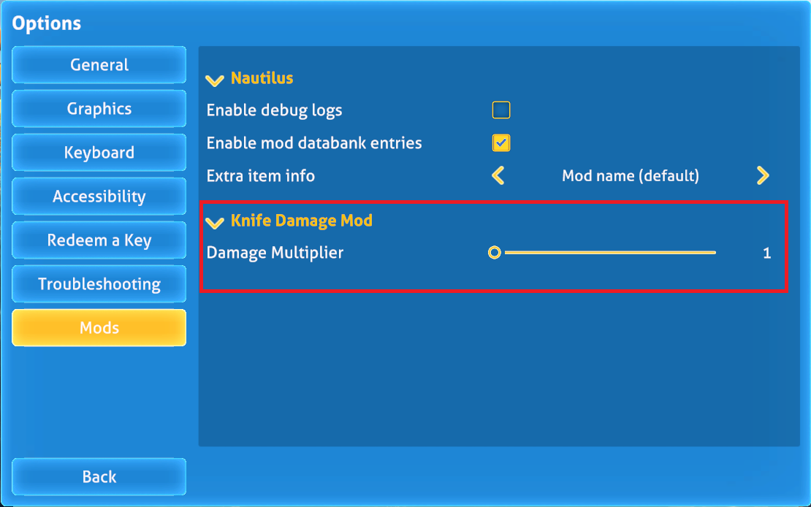

Enhancing your mod
Now that you've got some code working away and changing game behaviour, you can start to add some features. Let's allow the player to choose a multiplier for knife damage, rather than defaulting 5 times the default.
Nautilus provides some features that make this really easy to do using what's called a ConfigFile.
We can add our own ConfigFile for our mod by following these steps:
- Right click your project and "Add New Item"
- Select "Class" and call the new file "ModOptions.cs"
In the new file, add a Using statement to show we're going to use some Nautilus functionality and base the new class off the ConfigFile class:
using Nautilus.Json;
namespace DaftAppleGames.KnifeDamageMod
{
/// <summary>
/// Class to define options for our knife mode
/// </summary>
[Menu("Knife Damage Mod")]
public class ModOptions : ConfigFile
{
}
}
Let's add a "float" option, that the player can configure:
using Nautilus.Json;
using Nautilus.Options.Attributes;
namespace DaftAppleGames.KnifeDamageMod
{
/// <summary>
/// Class to define options for our knife mode
/// </summary>
[Menu("Knife Damage Mod")]
public class ModOptions : ConfigFile
{
// Damage Multiplier option
[Slider("Damage Multiplier", 1.0f, 100.0f, DefaultValue = 1.0f, Format = "{0:F2}")]
public float DamageMultiplier = 1.0f;
}
}
Your new ModOptions class inherits from the Nautilus ConfigFile class, so when you want to refer to the settings in your main mod code, you need to refer to that new ModOptions class, not the ConfigFile class.
So, we now need to amend our plugin class to initialise our new ModOptions before we patch in the code. So, back in our "KnifeDamagePlugin.cs" file:
using BepInEx;
using BepInEx.Logging;
using HarmonyLib;
using Nautilus.Handlers;
using static OVRHaptics;
namespace DaftAppleGames.KnifeDamageMod
{
[BepInPlugin(MyGuid, PluginName, VersionString)]
[BepInDependency("com.snmodding.nautilus")] // marks Nautilus as a dependency for this mod
public class KnifeDamagePlugin : BaseUnityPlugin
{
private const string MyGuid = "com.daftapplegames.knifedamagemod";
private const string PluginName = "Knife Damage Mod";
private const string VersionString = "1.0.0";
private static readonly Harmony Harmony = new Harmony(MyGuid);
public static ManualLogSource Log;
// Enhancing the mod - declare static ModOptions for use elsewhere
public static ModOptions ModOptions;
private void Awake()
{
// Enhancing the mod - Set up our Mod Options
ModOptions = OptionsPanelHandler.RegisterModOptions<ModOptions>();
Harmony.PatchAll();
Logger.LogInfo(PluginName + " " + VersionString + " " + "loaded.");
Log = Logger;
}
}
}
This allows us to access the properties of that class from anywhere within our plugin. For example, to access the damage modifier we can simply write: KnifeDamagePlugin.ModOptions.DamageMultiplier. You can learn more about static classes in the Microsoft C# programming guide.
Now all we have to do is reference the multiplier in our patch code. Back in "PlayerToolPatches.cs":
using HarmonyLib;
namespace DaftAppleGames.KnifeDamageMod
{
[HarmonyPatch(typeof(PlayerTool))]
internal class PlayerToolPatches
{
[HarmonyPatch(nameof(PlayerTool.Awake))]
[HarmonyPostfix]
public static void Awake_Postfix(PlayerTool __instance)
{
// Check to see if this is the knife
if (__instance is Knife knife)
{
// Write a line to our debug log
KnifeDamagePlugin.Log.LogDebug($"Knife damage is {knife.damage}");
// Make the knife do 5 times more damage
// knife.damage *= 5.0f;
// Enhancing the mod - apply option modifier
knife.damage *= KnifeDamagePlugin.ModOptions.DamageMultiplier;
// Write a line to our debug log
KnifeDamagePlugin.Log.LogDebug($"Knife damage increased to {knife.damage}");
}
}
}
}
So there you have it, a configurable damage multiplier that allows the player to tweak your mod to their liking!
Right click and "Build" your mod, ensuring there are no errors. The DLL should automatically be deployed to your game folder.
Start the game but now go into Options > Mods. You should see something like this:

You can adjust the multiplier using the slider. Set it to something really high, like 50. Now start or load a game, equip a new, and have a look again at the BepInEx log file:
[Debug :Knife Damage Mod] Knife damage is 20
[Debug :Knife Damage Mod] Knife damage increased to 1000
Now you can really kick some undersea ass!
Note that the player will have to restart the game after making any changes to your mod configuration. I'll leave it as an exercise for you to figure out how to make this dynamic, and allow the player to change the value mid-game.
Pro Tip - Nautilus annotations
Nautilus has a lot to offer when it comes to mod options. You can find more information on what is supported in the Nautilus documentation pages.